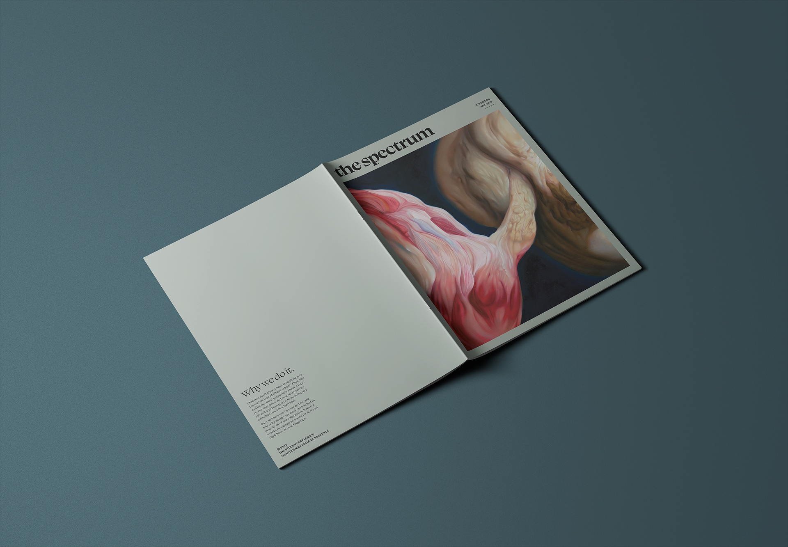
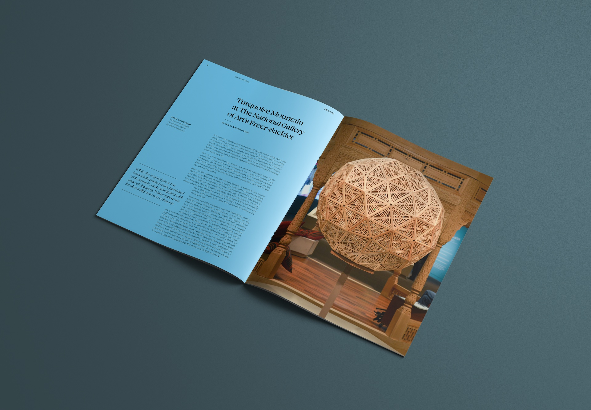

Publication
The Spectrum

A look back on my first volunteer design position, using my present-day design sensibilities.
Using material from the first publication I ever worked on, I decided to fine-tune my layout skills as preparation for my degree project.
During my time at Montgomery College, I was approached to serve as the Editor-In-Chief for our Student Art League. I was just a regular member at the time—helping set-up and take down events, filling in for a sick treasurer here and there—but I dove in and got to learning InDesign before I ever took my first Graphic Design class.
At times I filled in for writing articles or taking photographs close to their deadline. We were all volunteers who dealt with tests, sleepless study nights, and the like. Things happen, and I did my best to make it work.


